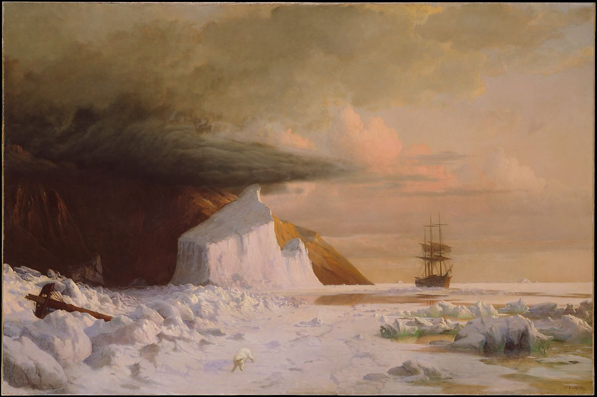

Featured Artist
Winslow Homer

William Bradford

Hubert Robert

American Civil War
Alexander Gardner
Upcoming Events
- 12/12/21 - Featured Artist: Winslow Homer
- 12/25/21 - Art & Christmas Livestream
About Us
The Museum was started by Ian Ashby in his Wed Fundamentals course at BYU Idaho in 2021. Ian chose this topic and theme because of his love for art. He believes that our cultures are important to celebrate and remember.
Read More